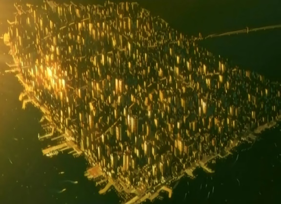

JAPANESE LOCATIONS
Akihabara : The world's biggest electrical equipment town. The name Akihabara is now world-famous. More than 350 electrical appliances, cybernetics, and electronics shops of all sizes are located in a small area around Chuo-dori Avenue, in the west of Akihabara Station. In recent years, the main trend has shifted from general home electrical appliances toward the new world of the cybernetics. Many residents speak English, Chinese and Korean.
With many service centers and the showrooms of major manufacturers, as well as duty-free shops and various events, the town is attractive in the eyes of visitors. Among these events, the Denki-matsuri Festival, held in summer and winter, is the biggest, a great chance for good shopping that you should never miss.
Aeropolis I & II : The old city in Niihama West sector is enormous. However, as expansion continued, this area grew less and less desirable for construction. At first, it was saturated with industrial pollutants. A large section of Nihama's old-city would become a Refugee Relief Sector. The Refugees refused to move into the heavy polluted area and it was abandoned. Even though the industrial pollutants of the old city had long since been removed with MicroMachines, no one has attempted to rebuilt and repopulate this area. The area was still next to a Refugee sector and looked ugly with old, tattered buildings.
In a vain attempt to inject life back into the old city and stimulate repopulation and investment opportunities, Megatech began a very audacious project to build a Geofront in the west sector. It would be the twin of a similar construction in the East, Aeropolis. Like its sister, Aeropolis II would feature a subterranean development topped with a massive tower complex rising over 100 floors above the ground. However, even though Aeropolis I proved a success, Aeropolis II failed and construction was halted. Officially, according to the Megatech construction committee, Aeropolis II is only in delay status and eventually, work will resume... eventually. Many belive it was a stupid structure to build there in the first place as it stood 90 floors higher than anything else around it.
However, most forgot about its existence until the Human Liberation Front staged a terrorist act in Aeropolis II using its abandoned but still functioning nuclear reactor.
Artificial Intelligence Research Agency : Located in Newport, the AIRA is a group investigating reports of spontaneous ghosts forming in usually Ghostless AI and conducting experiments to create one themselves. So far, they have never found an occurrence. By current date, the only thing that can create a ghost is a human being. However... the new Neurochips by Kenbishi, installed in Tachikomas, when exposed to massive amounts of stimuli, added to the fact that one of the chips was damaged by the use of natural oil, encouraged one model to develop the bare basics of a ghost.
Bertarve : Bertarve is located at the southernmost tip of the island of Etorofu. Etorofu along with Kunashiri, Shikotan, and the Habomai island group were occupied by Russia from 1945 until the end of WW III. In those days, Bertarve was a Russian city and the location of a Soviet sub base. When Russia withdrew and returned the Northern Islands to Japan, they set demo charges and buried the sub base. In recent years, Bertarve has grown up quite a bit. There are still many Russians that live in the area, but many Japanese have moved back in. Corporate Support for this area has been high due to its strategic northern location, and most major corporations operate branch offices in the area. The city's major problem is crime. With little time to change over police forces and to get an adequate system in place, Bertarve has fallen victim to a skyrocketing crime rate. The city has become a haven for wanted criminals, gangs and spies working on Russian targets. A thriving black market operates here, and due to the corruptibility of local police, it goes on in plain view in a large street market style setting. If it is illegal, and you want it, you can find it here.
The geography of Bertarve is quite interesting. The city is built at and around the base of Mt. Bertarve, which is about 4,500 meters high. The skyscrapers block out a lot of the view of the mountain. Some of the larger buildings are over 2 kilometers tall. From the center, the city sprawls out eleven kilometers each direction. There are major shipping ports situated on all sides of the city making it a major Japanese port. Etorofu is connected to the other islands and the mainland by the Tohoku Maglev train. As far as social geography goes, the rich live high in the towers above the poor who wander about the streets. With aerial walkways connecting many of the towers, the rich never have to come down to ground level.
Like Newport City, Bertarve is extremely dense and driving a car here is a hindrance. Most of the streets are filled with people, and for most of them, the preferred method of travel is walking. A Maglev runs through the city as well as a major mega-highway, both of which connect Etorofu to the other islands.
Bertrave is the key location of the Etorufu route.

Cabinet Intelligence Agency (CintAg) : An organization recently formed that, under the Chief Cabinet Secretary, mainly serves to collect and analyze foreign intelligence and to sometimes manipulate public opinion. They formed after the last war when pre-war intelligence agencies and the former Bureau of Defense Policy merged.
Dream Island : How deceiving a name it is. Yume-no-Shima, Dream Island (the landfill of the Tokyo metropolis) expanded after the third war to encompass an area four times its original planned size. A very large recycling plant still exists there, among the dunes of garbage.
Etorufu Route : Ports all operate substantial security to prevent contraband or prohibited technology from leaving Japan or to prevent weapons or terrorists from entering. However, a hole exists in the transport route through the Northern Islands. This became known as the Etorufu Route, a smuggling passage connecting Japan with Eastern Russia. Anything illegal in Japan owes its existence to this security gap. Most of the Smuggling is controlled through Bertrave and estimates indicate the money that passes through this city measures in the millions.
Harima City for Academic Research : Begun as a research facility complex financed by the state and major domestic corporations, Harima evolved into a city with the growth of the research and educational facilities. By 2028, the neurochips developed in 1998 at the Harima City for Academic Research had come to be used in many A.I.s and robots.
The city is also home to Spring-8, the largest third-generation synchrotron radiation facility in the world. It provides the most powerful synchrotron radiation currently available. The Japan Atomic Energy Research Institute (JAERI) and RIKEN (The Institute of Physical and Chemical Research) started construction of Spring-8 in 1991, and with support from Hyogo Prefecture, universities, research institutes and industry, completed the construction and opened the facility in October 1997. Since the completion of the facility, management, operation, upgrading of the facility, user service, and R&D on SR science and technology have been performed by the Japan Synchrotron Radiation Research Institute (JASRI), which was designated by law as the sole institute for the management, operation and development of Spring-8. At Spring-8, many researchers from around the world are making efforts to unlock the secrets of nature using synchrotron radiation as the key.
Harima Science Garden City is a major part of the Nishi-Harima "Technopolis" plan. This allowed Hyogo Prefecture to become the leading prefecture in Japan in the fields of science and technology. Megatech and Kenbishi Heavy Industries both use the city for a test bed for their prototypes.

Kyushi : Kyushi is now the national capitol of Japan.
Newport City : Newport is a constructed Island, built off the Shinhama ward of the Tokushima Prefecture. Newport City became a major city for trade, international relations and foreign affairs. The city was built in the early part of the millennium when issues of space started arising. There was generally not much of an urban metropolis in the Tokushima area before the port was opened in the 1990s. The area prospered, and its residents grew exponentially. In the early 2000s work began on the floating metropolis that is now known as Newport City. The city has become one of the thriving new metropolises of the new millennium. Although New Tokyo and Osaka are still very important cities in Japan, Newport City has become the significant international city. Major international corporations have their headquarters here, and many political conferences are now held here instead of in New Tokyo. As for the city's geography itself, it is built in an almost fortress-like fashion. The biggest corporate towers loom ominously in the center of the floating section, while thousands of smaller buildings surround them. An inner waterway surrounds the middle section. This waterway branches off into smaller canals that wind around parts of the city. The second ring is made of up large shipping piers (which are equipped to handle the largest sectional cargo ships) and warehouses. The rest of Shinhama, which is on land, is known as "Old Town". The northern areas of Tokushima are more spread out, and it is here where you find large estates and traditional pagoda style architecture.
There are many mega-highways that lead to the floating section; unfortunately, once you are on the island it is nothing more than a hindrance to drive a car. Newport City is very dense and heavily populated, so the best ways to get around are by the elevated train system, the electric busses or by boat (provided you are going somewhere on the canal).
New Hanamaki City : Another new population center constructed after World War III. A regional city that lies on the Tohoku Linear Rail line heading to Bertarve. A region with prosperous agriculture and industry. The station for the monorail, the sole transpiration facility that goes to the Tohoku Autonomous Region is located in the innermost ward of its industrial zone.
New Tokyo / Old Tokyo : Rebuilt after the majority of the old one was destroyed in a nuclear blast, New Tokyo rests closely to its predecessor and expanding so close its on the verge of reintegrating it again. When it occurs, Old Tokyo may be ready to be inhabited again. 24 hours a day, machines continually tear down and rebuild the landscape, trying to raise the ground level to bring the majority of the area from below the sea. The radiation thankfully, has been removed thanks to the Japanese Miracle. To this day, Old Tokyo remains a staunch reminder of how close the world came to destroying itself. Currently, what remains dry of Old Tokyo houses millions of homeless and those who wish to remain off the grid. It is known to have a very lucrative black market for weapons and cybernetics.
Niihama City : In Niihama prefecture, Niihama grew to immense size. Section 9 calls Niihama City home. It is also the location of the very well known Nihima University and the Niihama School of Medicine and Dentistry Medical College where the Nano Manufacturing Department resides.
Ostrov Islands : Japan claims ownership of several islands north of Hokkaidô. These include the two southernmost Kuril Islands, Ostrov Iturup (Etorofu-jima) and Ostrov Kunashir (Kunashiri-jima), as well as Shikotan and the Habomai island group. The Union of Soviet Socialist Republics (USSR) took control of these islands from Japan after World War II ended in 1945. Since the USSR dissolved in 1991, Russia has administered the disputed islands. After World War III, Japan seized control of these Islands under no protest. The resident Russian population was allowed to remain as immigrants, and many of them accepted the situation on Ostrov Iturup, the most populace of islands. Clashes still occur between the different ethnic groups on the Ostrovs. Several abandoned Russian military bases sit still, unoccupied. At least two navel bases were also abandoned and even an underground submarine dock. Several corporations like Sagawa shifted facilities onto Iturup, moving onto the old base facilities. A Geofront was also constructed there. Because of the massive immigrant population, and the precarious political position of the islands, several black markets exist, especially on Iturup.
Refugee Relief Sectors : After World War III and World War IV, a massive shifting of population occurred all over the globe. Hundred of thousands of non-Japanese citizens found themselves on Japanese soil, either from a failed invasion, or fleeing from their own countries. Many, those with applicable skills and training and advanced cyberbodies, were permitted visas. Others gained full citizenship, leading to the more colorful demographic of Japan's society. However, hundreds of thousands still remained. The Special Refugee Treatment Act was formed and locations around Japan (mostly no-man land and old radiation zones cleaned up after the Japanese Miracle) were set aside and fenced. The Refugees were permitted to live independently in these zones. However, they could not enter Japan without proper permits or Visas. In many ways, these Sectors became autonomous nations, under no leadership, with no way to support themselves. None of the people in these sectors wants to return to their countries (if they existed), so they remained... for years.
There are five residential refugee relief sectors in Japan. Mostly with Chinese refugees. One is located in Niihama. The largest one in Kyushu is better known as Dejima Camp or Dejima Island. Another sits in Kanto and the other in Shinjuku, where part of old Tokyo resides in the camp. The last is in Nagasaki. Homeless people, with nowhere else to go, often hide in Refugee Relief Sectors. These sectors often supply a cheap labor force to major cities like Kyushu. Dejima Island stands out from other districts. Unlike other districts, which recycles other facilities, it was a floating industrial island, built only for its purpose, connected to the mainland, by a very long bridge. This bridge remains the only passageway and method of wired communication between the island and the rest of Japan.

Tohoka Autonomous Region : The Tohoka Autonomous Region is a section of Japan largely ignored, and thus became somewhat independent since the last war. It is camouflaged from air and space. This region was known to be a refuge of scientists operating on several advanced technologies including MicroMachines. Japan still considers the TAR part of their nation and when the scientists of TAR developed a technology which (with the proper patents) could yield a massive monetary injection, Japan stole the patent and robbed TAR of its insurance. This technology was MM Rice, which cured the majority of the food problems across the world.
Optically camouflaged in aerial and satellite imagery, all that shows is a giant dam that boasts a large water capacity. In reality, it is a special JGSDA facility that was constructed to safeguard intellectual assets. With the war now over, work has begun to return it to its original dam form.
1987 : construction begins on dam structure.
1995 : construction is completed.
1996 : converted to "Tohoku Final Defensive Perimeter Outer Wall" without the dam structure undergoing a test filling.
1996 : construction begins on the Rikuu dam as the Tohoku Final Defense Perimeter, which is to form the outer wall of a JGSDA facility.
2000 : primary construction complete as Tohoku Final Defense Perimeter.
2002 : converted to JGSDA Facility to Scientist Evacuation Point. It employs noted scholars and engineers of all fields from Japan's corporations and learning institutions. Research begins on military engineering and increasing the food supply.
2026 : with the end of the war, the decision to close it down. Other than certain people, withdrawal begins.
2028 : dismantling operation begins. Prostheticized refugees are brought in as a work force. Although it lies in the mountainous region of New Hanamaki City, it is off-limits to unauthorized personnel under the pretext of water supply security.
Type : concrete gravity dam.
Embankment height : 156 meters.
Embankment width : approx. 400 meters.
Embankment volume : approx. 2 million cubic meters.
Total storage capacity : 193 million cubic meters.
Effective storage capacity : 183 million cubic meters.
Official designation : Rikuu Dam #1.
With an investment of 400 billion yen in operating funds, it was built as a multi-purpose dam, with such goals as flood control, conservation, irrigation, and hydroelectric power.
A closed ecosystem was artificially produced in the deep underground sector of the Tohoku Autonomous Region to conduct cultivation experiments on MM-rice. The experiments were expected to produce high yields, even in a variety of weather and natural environments, but the project ended with the death of head researcher Kei Yazawa.
Tohoku Final Defensive Perimeter Proposal
Confronted by the coming final battle on the mainland, and heeding the increased calls for a military stronghold that would act as a pivot point in the tactically unfolding north, we hereby redesignate the test facility that is under construction as part of the scientific and technical preservation policy from the "Tohoku Scientific and Technical City" to the "Tohoku Final Defensive Perimeter". The facility's supreme commander will be placed under the jurisdiction of the Premier and the Dense Ministry. It sounds respectable when you call it scientific and technical preservation at the behest of the state, but in face, investigation reports put the number of people there, including the scientists and technicians forcibly evacuated there to work on developing new weapons during the war, as well as their families, in excess of 9000. Its perimeter is surrounded by mountain forests, it is walled in by the dam embankment, and the transport to the nearest town. Hanamaku Industrial City, is a single monorail line run by the JGSDA. This is not an evacuation; this ought to be called house arrest by the state.
After the war, the liberated scientists have all kept silent and avoided all discussion pertaining to the Tohoku Final Defensive Perimeter. Perhaps this is because it reminds them even now, six years after the war, of the bitter lives they led, bound by the chains of fears of the military.
Autonomous Regional Director Inaugural Address
We hold these truths to be self-evident, that all men are created equal, that they are endowed with certain unalienable rights that among these are life, liberty and the pursuit of happiness. Those to secure these rights, governments are instituted among men, deriving their just powers from the consent of the governed. That whenever any form of government becomes destructive to these ends, it is the right of the people to alter or to abolish it. It is their rights of citizens to throw off such government, and to provide new guards for their future security. The foundation of the new government is to be laid on such principles and organizing its powers in such form, as to them shall seem most likely to effect their safety and happiness. Nor have we been wanting in attention to our Japanese brethren. We have warned them from time to time of attempts by their legislature to extend an unwarrantable jurisdiction over us. We have appealed to their native justice and magnanimity, and we have conjured them by the ties of our common kindred to disavow these usurpations, which, would inevitably interrupt our connections and correspondence.
Yet again, however, the citizens of Japan have failed to listen to calls based on justice and ties of common kindred. We, therefore, the representatives of the Tohoku Autonomous Region, in General Congress, assembled, appealing to the Supreme Judge of the world for the rectitude of our intentions, do, in the name, and by the authority of the good people of the Tohoku Autonomous Region, solemnly publish and declare, that as a free and independent autonomous region, this Tohoku Autonomous Region of right ought to be a free, independent economic zone. As the Tohoku Autonomous Region, we declare our independence and are henceforth-absolved form all allegiance to the Japanese government. And for the support of this declaration, with a firm reliance on the protection of Divine Providence, we mutually pledge to each other our lives, our fortunes and our sacred honor.
-- Toshimi Tagami Tohoku Autonomous Regional Director.
Autonomous Region Charter
With pride and duty in our hearts as citizens of the Tohoku Autonomous Region, utilizing the knowledge cultivated by our forebears and the essence of hard-won technology our goal is to work for peace on this world.
We shall cultivate strong bodies, hearts, and profound knowledge.
We shall build cities where the consideration of heart touching heart may be found.
We shall utilize astonishing knowledge and technology to restore world peace.